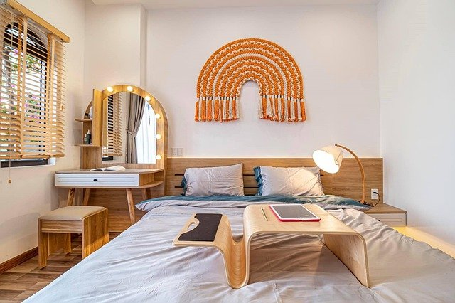
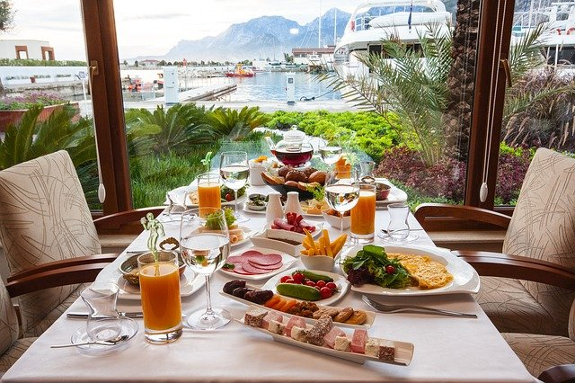

Welcome to
TANITI

What to Do
Check out our extensive list of things to do during your visit. Attractions and events await!
-

Where to Stay
Accomodations are available for every type of budget. Our hotels are highly rated for comfort and service.
-

Where to Eat
Explore the taste of Taniti with our vast array of yummy food options. Come enjoy a taste of the islands.
Tourist Info
Information about your visit, including FAQ, transportation, immigration and how to contact us.
About UsTaniti is a small, tropical island in the Pacific. While the island has an area of less than 500 square miles, the terrain is varied and includes both sandy and rocky beaches, a small but safe harbor, lush tropical rainforests, and a mountainous interior that includes a small, active volcano. Taniti has an indigenous population of about 20,000. Until a recent increase in tourism, most the Tanitian economy was dominated by fishing or agriculture. |